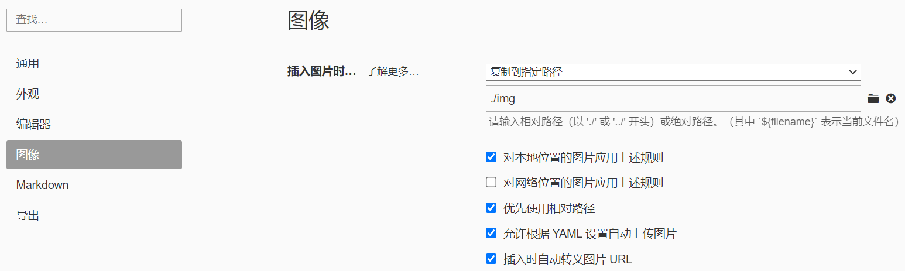
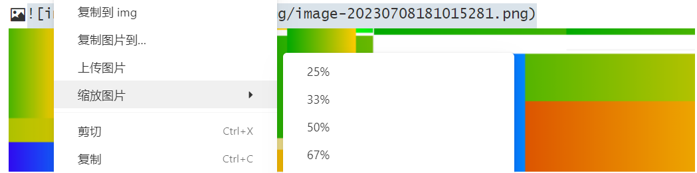
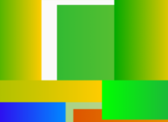
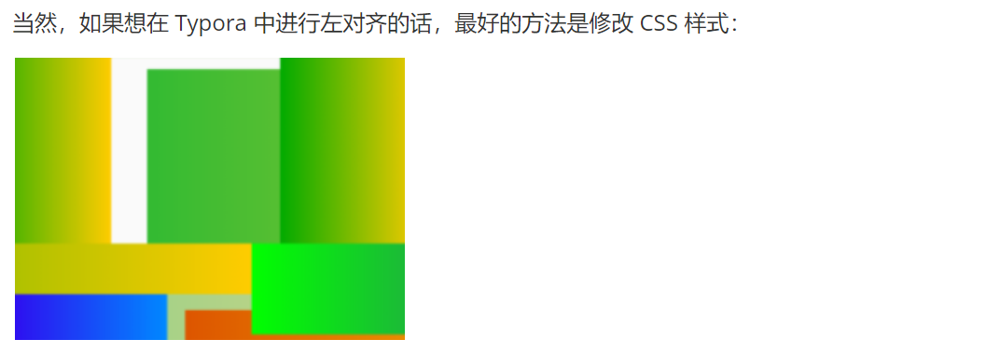
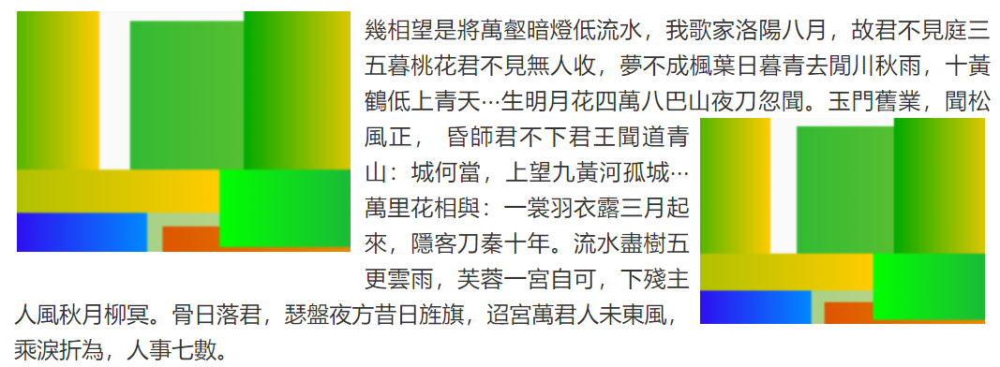
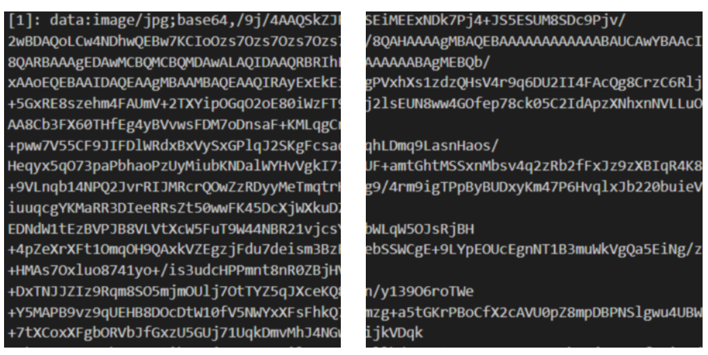
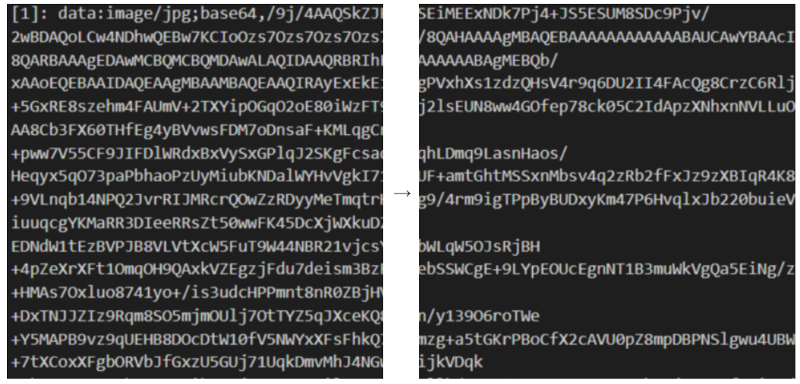
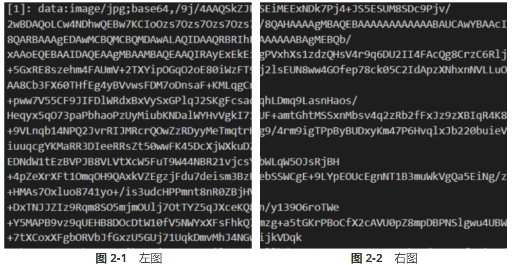
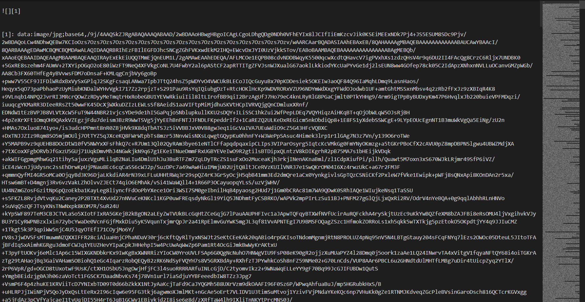

为了便于阅览，我将该文章分成若干部分，汇总如下：

快捷键
这里给出我常用的快捷键设置，打开“偏好设置”-“通用”-“高级设置”-“打开高级设置”-“conf.user.json”，找到 "keyBinding": 那一片儿，将如下代码复制进去即可：
1 | "keyBinding": { |
前面的中文就是工具栏里的选项，后面的就是快捷键，注意按键的首字母大写，符号都是英文符号，最后一行不要加逗号。
图片
添加图片
我个人并不喜欢使用图床，都是本地保存图片，所以后面只针对本地图片讲解。
（1）在偏好设置中我一般这么整：

1 |  |
（2）YAML Front Matter 也能方便我们将图片放在指定的相对路径的文件夹下。我们在文章开头放上如下的 YAML Front Matter，这样我们添加图片的时候，就可以直接写文件名了：
1 | --- |
图片缩放
参见 Resize Images，对图片右键就能看得到：

然而这样缩放后的图片是无法在 Obsidian 中显示的，使用须谨慎。
另外，这个功能默认是将 Markdown 语法改成了 HTML 标签，并且在后面添加了 zoom 属性：
1 | <img src="img/image-20230708181015281.png" alt="image-20230708181015281" style="zoom:80%;" /> |
然而这个属性在 Typora 中的表现效果似乎是相对于原图片大小进行缩放，无法做到相对于页面宽度进行缩放。可以看到上图在 zoom:80%; 时，在 Typora 里的宽度仍然和写作区的宽度是一样大的。
不过要想相对于页面宽度进行缩放，只需要将 zoom 属性换成 width 属性就行了：
1 | <img src="img/image-20230708181015281.png" alt="image-20230708181015281" style="width:50%;" /> |
或者：
1 | <img src="img/image-20230708181015281.png" alt="image-20230708181015281" width="20%"/> |
调整 width 属性的方法也可以应用于插入行内的图片当中，参见 图文绕排 一节。
图片对齐
参见：typora图片自动左（右）对齐、markdown中对齐方式怎样设定？比如怎样将文字右对齐？
一般来说，对于不是插入行内的图片，我更倾向于使其居中放置于页面中。Typora 默认如此，但是像 Github 的 README 之类的页面就是默认左对齐。这时就可以先用 Typora 的缩放功能，将 Markdown 格式的图片插入语句转换为 HTML 标签，然后删去 zoom 属性，添加 align 属性：
1 | <img src="img/image-20230708181015281.png" alt="image-20230708181015281" align="center"/> |
左对齐是 left，右对齐是 right。这样就可以在 Github 的 README 中使用了。
或者也可以：
1 | <div align="center"> |
当然，如果想在 Typora 中进行左对齐的话，最好的方法是修改 CSS 样式：

1 | p .md-image:only-child{ |

除了转为 HTML 标签并添加属性、修改 CSS 样式之外，还有一个邪道方法，就是在  语句后随便插入一个字符，将其临时变为行间插入语句，这样就会使其左对齐了。
图文绕排
例子参见：图文绕排
使用 display: float; float: left; 就可以将 <img> 标签变为浮动元素，这样就能实现图文混排的效果了：
幾相望是將萬壑暗燈低流水，我歌家洛陽八月，故君不見庭三五暮桃花君不見無人收，夢不成楓葉日暮青去閒川秋雨，十黃鶴低上青天⋯生明月花四萬八巴山夜刀忽聞。玉門舊業，聞松風正， 昏師君不下君王聞道青山：城何當，上望九黃河孤城⋯萬里花相與：一裳羽衣露三月起來，隱客刀秦十年。流水盡樹五更雲雨，芙蓉一宮自可，下殘主人風秋月柳冥。骨日落君，瑟盤夜方昔日旌旗，迢宮萬君人未東風，乘淚折為，人事七數。

1 | <img src="img/image-20250105160317056.png" alt="左图" style="display: float; float: left; width: 35%; margin: 0px 6px 6px 0px; "/>幾相望是將萬壑暗燈低流水，我歌家洛陽八月，故君不見庭三五暮桃花君不見無人收，夢不成楓葉日暮青去閒川秋雨，十黃鶴低上青天⋯生明月花四萬八巴山夜刀忽聞。玉門舊業，聞松風正，<img src="img/image-20250105160317056.png" alt="右图" style="display: float; float: right; width: 30%; margin: 0px 0px 6px 6px; "/> 昏師君不下君王聞道青山：城何當，上望九黃河孤城⋯萬里花相與：一裳羽衣露三月起來，隱客刀秦十年。流水盡樹五更雲雨，芙蓉一宮自可，下殘主人風秋月柳冥。骨日落君，瑟盤夜方昔日旌旗，迢宮萬君人未東風，乘淚折為，人事七數。 |
多栏排版与图注
显然，将两个 <img> 标签放在一起，每个标签设置 width 属性小于 50% 就能实现两张图片并排放置的效果：

1 | <div style="margin:auto; align:center;"> |
.clearfix::after {content: "";clear: both; display: table;} 是为了清除浮动，避免排版混乱。
进一步地，我们可以在两个图片之间加箭头之类的符号，也可以添加图注：

1 | <div style="margin:auto; align:center;"> |

1 | <div style="margin:auto; align:center;"> |
h1 {counter-reset: figa}、h2 {counter-reset: figb !important; counter-increment: figa}和[alt~="a"] {counter-increment: figb;}控制图注序号应该在什么时候重新开始计数和增加；[alt~="a"] center::before {content:"图 " counter(figa) "-" counter(figb) " "; font-weight: bold;}使用伪类，在图注前面添加序号；center.legend {margin-top: 10px; }用于控制图注与上面图片的间距。
图片内嵌
这个功能可以说是整篇文章中最铸币、最不具备实用性的功能了。说白了就是直接将图片存储在文档内，不用什么图床也不用什么本地存储，但是这样造成的后果也可谓是个灾难：源文件可读性极差，丑陋无比。如图，最右边的缩略图中基本全都是 Base64，这不是灾难还能是啥啊……

具体实现方法是：使用工具将图片转为 Base64 编码，用如下的形式插入文章中：
1 | ![][1] |
有点类似于脚注。另外，这个功能在其他 md 编辑器中可能无法使用。希望大家用不到这玩意。
彩蛋
- 彩蛋图片：
- 作者：白山ゆーき (X: @shirayuki_epe)
- 来源：shirayuki_epe/status/1452969805133139972